Do continuous numerical variables ke beech ka hidden connection khojna: Positive aur negative correlation se lekar hue, size, style semantic encodings, relplot() figure-level multi-panel faceting, aur regplot() trend lines ki complete practical guide in natural Hinglish.
Data science aur analytics me jab bhi hum do continuous numerical variables ke beech ka connection explore karna chahte hain, to hamara sabse pehla aur sabse powerful tool hota hai: Scatter Plot.
Sochiye ek natural real-life question: "Kya zyada ghante padhai karne wale students ke marks generally zyada aate hain?" Aur "Kya phone ki price badhne ke sath uski battery capacity bhi badhti hai ya koi trade-off hota hai?"
Aise sawalon ka jawab dhoondhne ke liye hum tabular data ke dono numbers ko 2D Cartesian coordinate plane par map karte hain. Jahan har ek individual row (observation) ek single dot ban jati hai!
Scatter plot me har dot ek single data record ko represent karta hai — jaise ek specific student, ek specific smartphone, ya ek advertising campaign. Dot ka horizontal position uske X-axis variable ki value batata hai aur vertical position uske Y-axis variable ki value batata hai.
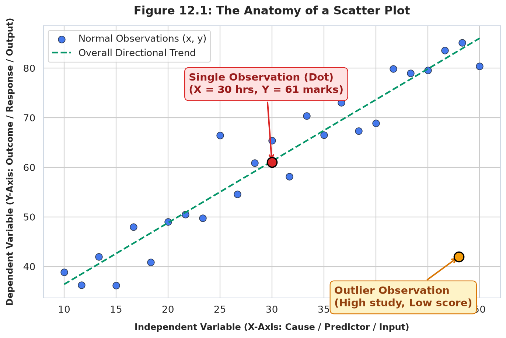
Data visualization me axes ka assignment meaningful hona chahiye:
Jab students zyada ghante padhai karte hain, to kya unke marks badhte hain? Niche di gayi verified graph dekhiye jisme 120 students ka real data plot kiya gaya hai:
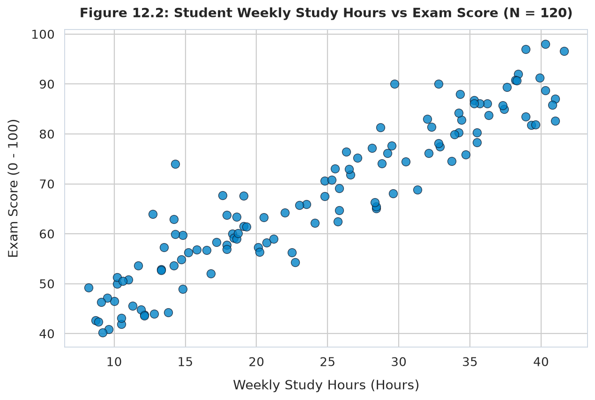
Ab ek aur dilchasp sawal: "Agar phone mehenga hai, to kya uski battery bhi badi hogi?" Reality aksar intuition se ulte hoti hai:
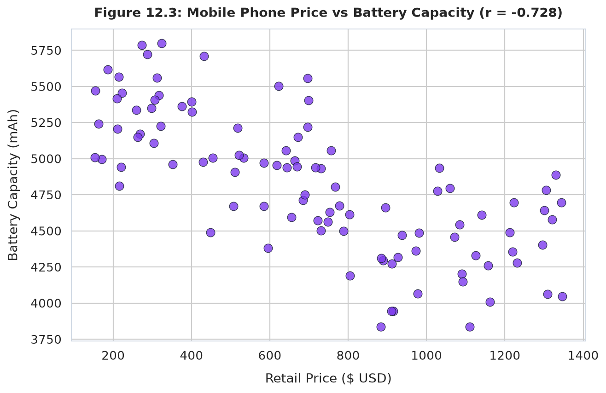
Agar do variables ek sath move kar rahe hain, to iska matlab ye har-giz nahi hai ki ek variable ne dusre ko cause kiya! Ho sakta hai koi teesra hidden confounding factor dono ko drive kar raha ho, ya fir ye sirf ek coincidence (spurious correlation) ho. Scatter plot sirf association dikhata hai, causation ka proof nahi deta!
Experienced data analysts chart draw karne se pehle hamesha data ko inspect aur clean karte hain. Agar dataset me missing values, incorrect data types, ya extreme outliers hain, to scatter plot misleading pattern create kar sakta hai.
| Inspection Step | Pandas Command | Why It Matters for Scatter Plots |
|---|---|---|
| Check Shape & Structure | df.shape |
Confirms the number of observations (rows) and potential visual clutter. |
| Verify Data Types | df.dtypes |
Both X and Y must be numeric (int64 or float64); strings will break continuous axes. |
| Detect Missing Values | df.isna().sum() |
Seaborn silently drops rows with NaN in X or Y; you must know how many rows were excluded. |
| Check Summary Statistics | df.describe() |
Detects negative values, unexpected zeroes, or extreme scale differences. |
| Inspect Units & Scales | Domain Review | Ensure axes are labeled with clear units (e.g. Hours, $ Thousands, mAh). |
import pandas as pd
import numpy as np
# Load our verified dataset
df_students = pd.read_csv("student_study_performance.csv")
# 1. Inspect structure
print("Dataset Shape:", df_students.shape)
print("
Column Data Types:
", df_students.dtypes)
# 2. Check for missing values
print("
Missing Values Count:
", df_students.isna().sum())
# 3. View 5-number numerical summaries
print("
Descriptive Statistics:
", df_students[["Study_Hours", "Exam_Score", "Attendance_Pct"]].describe())
# 4. View sample records
print("
First 3 Records:
", df_students.head(3))Hamara student dataset 120 rows aur 7 columns contain karta hai. Zero missing values hain. Study_Hours ki mean value 24.22 hours hai (range: 8.2 - 41.6 hrs) aur Exam_Score ki mean value 67.43 marks hai (range: 40.2 - 98.0). Data bilkul clean aur ready for plotting hai!
sns.scatterplot() — Study Hours vs MarksSeaborn me scatter plot banana bohot clean aur intuitive hai. Iska basic syntax hai:
sns.scatterplot(data=df, x="Independent_Var", y="Dependent_Var", **kwargs)| Parameter | Type | Description & Purpose |
|---|---|---|
data |
DataFrame | Tidy pandas DataFrame containing the variables. |
x, y |
str column names | Variables specified for the horizontal and vertical spatial positions. |
hue |
str column name | Grouping variable that produces points with different colors. |
size |
str column name | Grouping variable that produces points with different marker sizes. |
style |
str column name | Grouping variable that produces points with different marker glyphs (shapes). |
palette |
str / dict / list | Color palette mapping for hue. |
sizes |
tuple (min, max) |
Range of marker sizes when size variable is mapped. |
alpha |
float (0.0 - 1.0) | Point transparency via **kwargs to relieve overplotting. |
ax |
matplotlib.axes.Axes | Pre-existing axes for the plot; otherwise uses current active axes. |
import seaborn as sns
import matplotlib.pyplot as plt
import pandas as pd
# Load verified dataset
df_students = pd.read_csv("student_study_performance.csv")
plt.figure(figsize=(9, 5.5))
sns.set_theme(style="whitegrid", font_scale=1.05)
# Generate scatter plot
sns.scatterplot(
data=df_students,
x="Study_Hours",
y="Exam_Score",
color="#10B981",
s=75,
alpha=0.85,
edgecolor="#064E3B",
linewidth=0.6
)
plt.title("Figure 12.4: First sns.scatterplot() Implementation on Student Data", fontweight="bold", pad=12)
plt.xlabel("Weekly Study Hours (Hours)", labelpad=10)
plt.ylabel("Exam Score (0 - 100)", labelpad=10)
plt.tight_layout()
plt.show()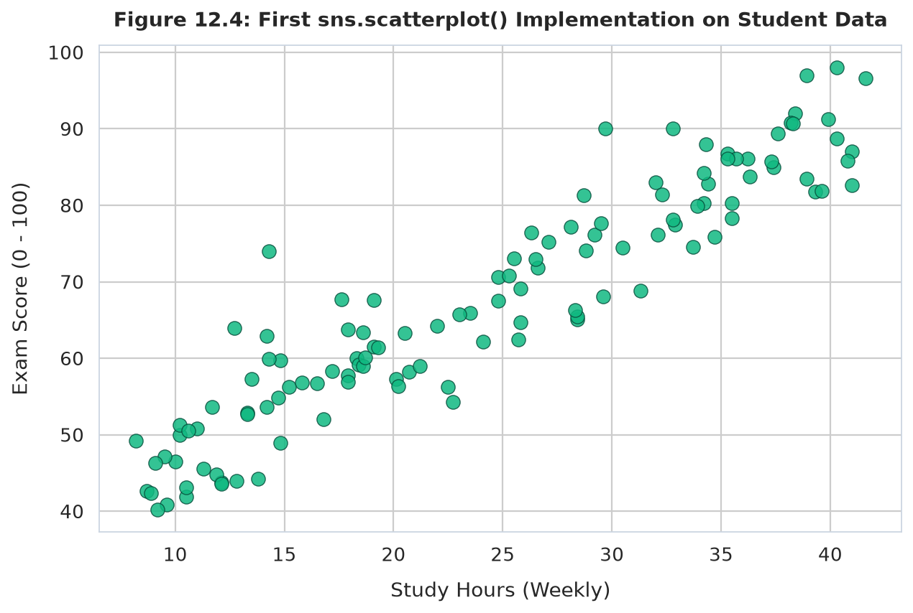
Agar aap kisi specific dot ko dekhte hain — jaise X = 32 hours par ek dot Y = 80 par hai — iska matlab hai ki us student ne week me 32 hours padhai ki aur exam me 80 marks score kiye. Notice karein ki 32 hours par sabhi students ke exact 80 marks nahi hain! Kuch ke 75 hain, kuch ke 84. Ye natural variance (noise) hai jo real human data me hamesha hoti hai.
Ab aaiye corporate business environment me scatter plot ki power dekhte hain. Ek marketing agency ne 160 campaigns run kiye hain. Hamara sawal hai: "Jab hum advertising par zyada spend karte hain, to kya sales revenue reliably increase hota hai?"
import seaborn as sns
import matplotlib.pyplot as plt
import pandas as pd
df_marketing = pd.read_csv("marketing_campaign_sales.csv")
plt.figure(figsize=(9.5, 5.5))
sns.set_theme(style="whitegrid", font_scale=1.05)
sns.scatterplot(
data=df_marketing,
x="Ad_Spend_Thousands",
y="Revenue_Thousands",
color="#EA580C",
s=70,
alpha=0.8,
edgecolor="#431407",
linewidth=0.5
)
plt.title("Figure 12.5: Marketing Ad Spend vs Revenue Generated (r = 0.977)", fontweight="bold", pad=12)
plt.xlabel("Advertising Expenditure ($ Thousands)", labelpad=10)
plt.ylabel("Sales Revenue ($ Thousands)", labelpad=10)
plt.tight_layout()
plt.show()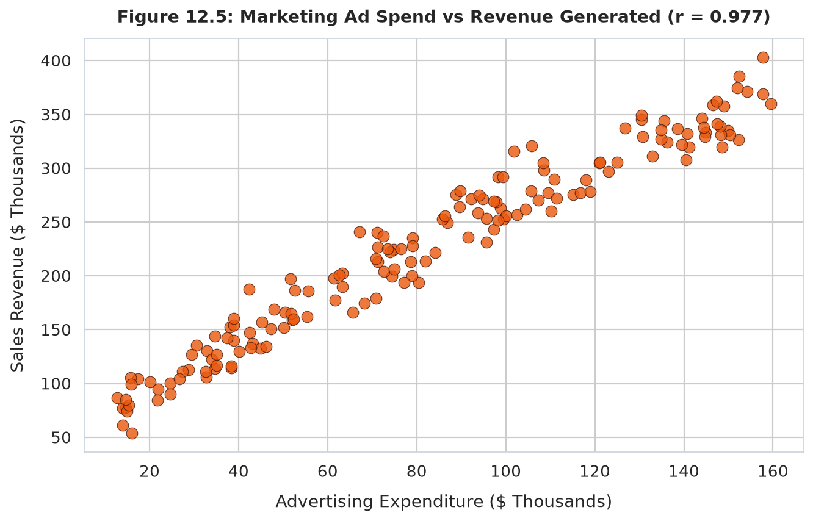
Scatter plot ka sabse bada benefit ye hai ki ye human brain ko raw numbers ke beech ke geometric patterns ko instantly detect karne me help karta hai. Real-world data me relationships 4 major categories me fall karti hain:
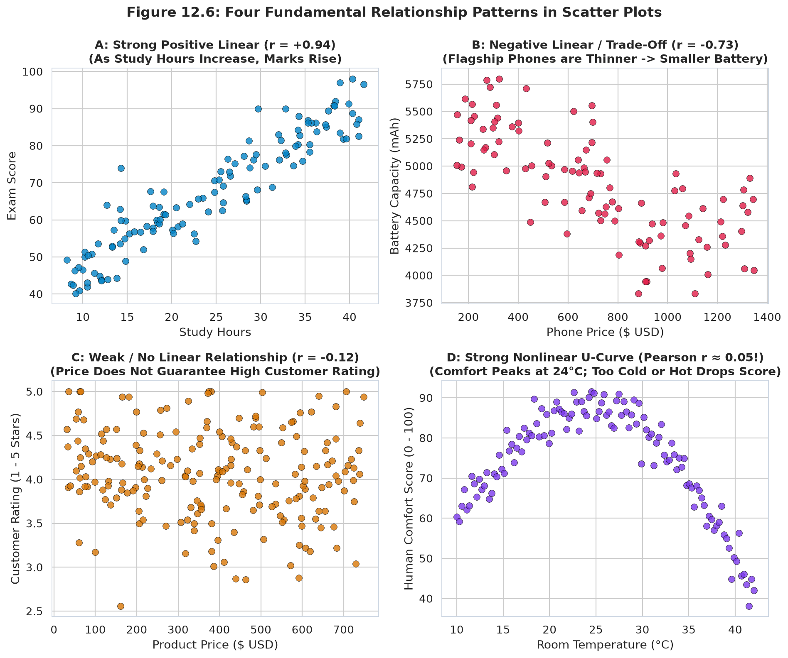
| Pattern Type | Visual Direction & Shape | Real-Life Example | Pearson Correlation (r) |
|---|---|---|---|
| 1. Positive Linear | Bottom-left se top-right ki taraf upward slope. | Study Hours vs Exam Marks; Height vs Weight. | Strong Positive: r > +0.70 (Hamara: +0.94) |
| 2. Negative Linear | Top-left se bottom-right ki taraf downward slope. | Car Age vs Resale Price; Phone Price vs Battery mAh. | Strong Negative: r < -0.70 (Hamara: -0.73) |
| 3. Weak / No Relation | Points random cloud (cloud of dust) ki tarah scattered hote hain. | Product Price vs Customer Star Rating. | Near Zero: -0.20 ≤ r ≤ +0.20 (Hamara: -0.12) |
| 4. Nonlinear Curve | U-shape, inverted U, S-curve, ya exponential hockey stick. | Room Temperature vs Comfort; API Load vs Latency. | Misleading: r ≈ 0.05 despite near-perfect relation! |
Textbook physics me data points ek straight line par fall karte hain (y = mx + c). Lekin business aur human biology me hamesha natural variability aur measurement noise hoti hai. Agar points perfectly single line par na hon balki ek cigar-shaped cloud banayein, to bhi relationship statistically strong aur valid hoti hai!
hue: Categorical BreakdownScatter plot sirf do numerical variables tak limited nahi hai. Seaborn ka hue parameter pass karke aap ek third categorical variable ko color ke roop me encode kar sakte hain!
Isse chart ek single 2D plane par ek sath multiple groups ki performance ko distinguish karne lagta hai bina audience ko confuse kiye.
Aaiye dekhte hain ki kya Self-Study, Group Study, aur Coaching lene wale students ke study hours aur marks me koi distinct cluster banta hai:
import seaborn as sns
import matplotlib.pyplot as plt
import pandas as pd
df_students = pd.read_csv("student_study_performance.csv")
plt.figure(figsize=(9.5, 5.5))
sns.set_theme(style="whitegrid", font_scale=1.05)
# Color points by categorical Study_Method
sns.scatterplot(
data=df_students,
x="Study_Hours",
y="Exam_Score",
hue="Study_Method",
palette="Set1",
s=75,
alpha=0.85,
edgecolor="black",
linewidth=0.5
)
plt.title("Figure 12.7: Student Exam Scores by Study Hours and Study Method", fontweight="bold", pad=12)
plt.xlabel("Weekly Study Hours (Hours)", labelpad=10)
plt.ylabel("Exam Score (0 - 100)", labelpad=10)
plt.legend(title="Study Method", frameon=True)
plt.tight_layout()
plt.show()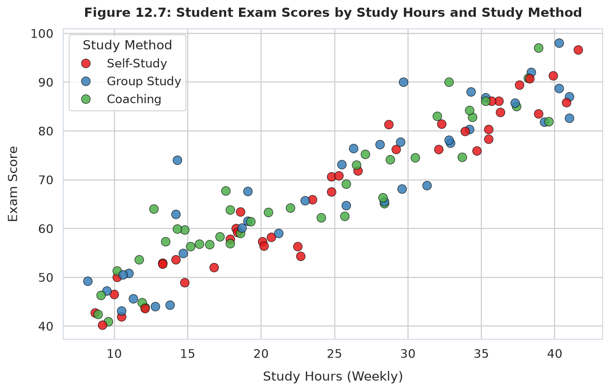
Marketing campaigns me geographical regions (North, South, East, West) ko color-code karke dekhne se regional performance disparities instantly spotlight ho jati hain:
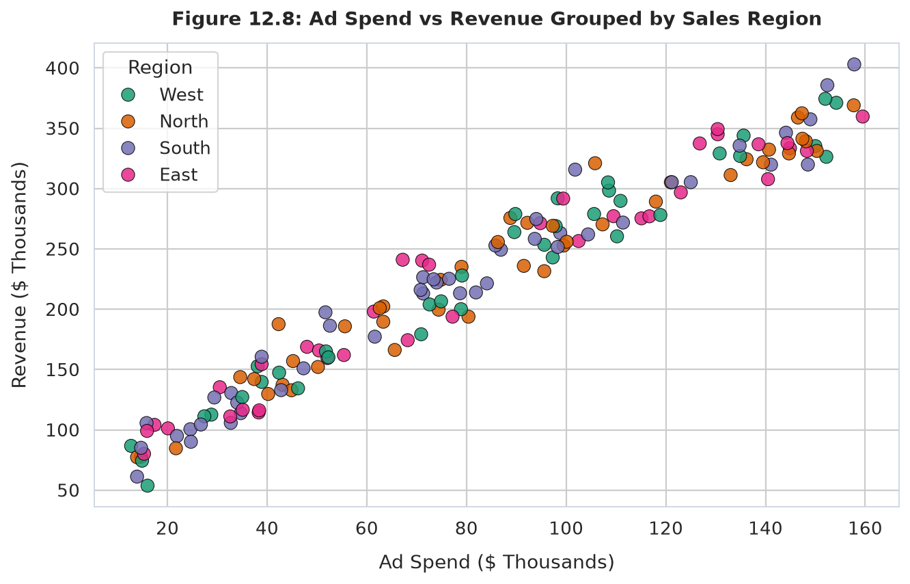
palette="Dark2" to separate North, South, East, and West campaigns. North region (mean revenue $236.61k) consistently occupies the higher revenue tiers for equivalent ad spend!Hamesha color-blind safe palettes use karein (jaise palette="Dark2", "tab10", ya "colorblind"). Avoid using subtle pastel colors for points kyunki small dots light background par unreadable ho jate hain. Adding a subtle dark outline (edgecolor="black", linewidth=0.5) ensures maximum point clarity.
sizeJab aapke paas teen continuous numerical variables hon, to aap 2 variables ko X aur Y axes par place kar sakte hain aur teesre numerical variable ko marker ke size (diameter) par map kar sakte hain! Is type ke visualization ko classical data science me Bubble Chart bhi kaha jata hai.
| Parameter | Usage / Syntax | Importance |
|---|---|---|
size |
size="Numerical_Column" |
Continuous column jo dot ke size ko scale karega. |
sizes |
sizes=(min_size, max_size) |
Point diameter bounds (e.g. sizes=(35, 230)) taaki small points disappear na hon aur large points screen block na karein. |
size_norm |
matplotlib.colors.Normalize |
Normalization scaling (linear ya logarithmic) for marker area. |
Niche student study performance me marker size student ki class attendance percentage (55% se 99%) ko represent kar raha hai:
import seaborn as sns
import matplotlib.pyplot as plt
import pandas as pd
df_students = pd.read_csv("student_study_performance.csv")
plt.figure(figsize=(10, 6))
sns.set_theme(style="whitegrid", font_scale=1.05)
# Map continuous Attendance_Pct to marker size
sns.scatterplot(
data=df_students,
x="Study_Hours",
y="Exam_Score",
size="Attendance_Pct",
sizes=(35, 230), # Minimum and maximum marker size limits
color="#2563EB",
alpha=0.75,
edgecolor="black",
linewidth=0.5
)
plt.title("Figure 12.9: Study Hours vs Marks with Marker Size = Attendance %", fontweight="bold", pad=12)
plt.xlabel("Weekly Study Hours (Hours)", labelpad=10)
plt.ylabel("Exam Score (0 - 100)", labelpad=10)
plt.legend(title="Attendance %", frameon=True, bbox_to_anchor=(1.02, 1), loc="upper left")
plt.tight_layout()
plt.show()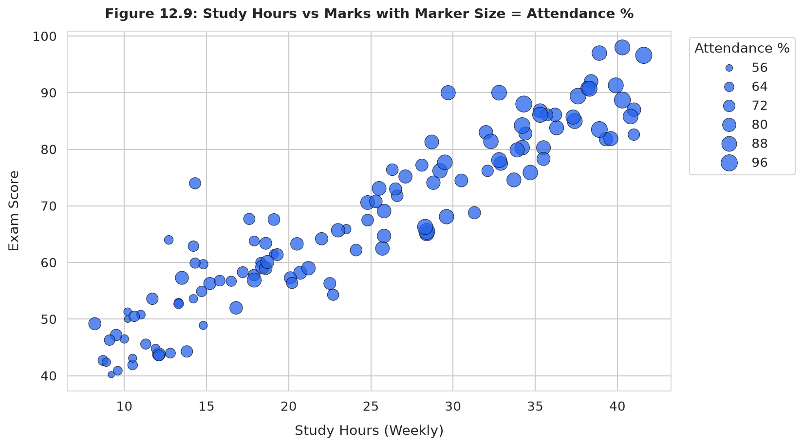
Marketing me ad spend aur revenue ke sath total digital reach (millions of impressions) ko size ke roop me encode karne se campaign scale ka perspective milta hai:
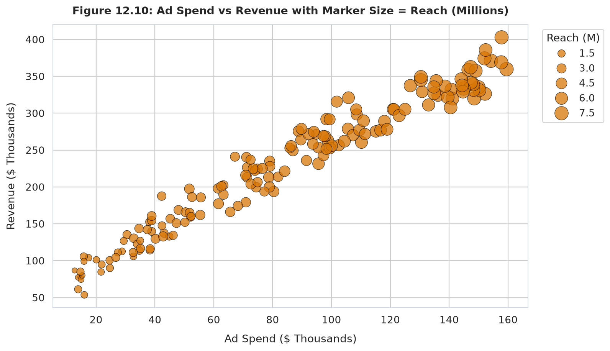
Human perception area (π r²) ko perceive karti hai, diameter (2r) ko nahi! Agar aap value double hone par diameter double kar denge, to dot ka area 4 guna bada dikhega, jisse reader ko lagega ki value 4 times hai! Seaborn automatically area-based scaling use karta hai, jo scientifically correct visual encoding ensure karta hai.
styleAgar aapke paas color (hue) ke alawa ek aur categorical factor hai — ya aap monochrome / grayscale print publishing ke liye chart design kar rahe hain — to Marker Style (Shape) best choice hai.
Seaborn ka style parameter har category ko distinct glyph provide karta hai — jaise Circle ('o'), Square ('s'), Triangle ('^'), Diamond ('D'), ya Cross ('X').
import seaborn as sns
import matplotlib.pyplot as plt
import pandas as pd
df_students = pd.read_csv("student_study_performance.csv")
plt.figure(figsize=(9.5, 5.5))
sns.set_theme(style="whitegrid", font_scale=1.05)
# Encode exam type through marker shape
sns.scatterplot(
data=df_students,
x="Study_Hours",
y="Exam_Score",
style="Exam_Type",
markers={"Midterm": "o", "Final": "s"}, # Explicit circle vs square glyphs
color="#4F46E5",
s=80,
alpha=0.85,
edgecolor="black",
linewidth=0.5
)
plt.title("Figure 12.11: Distinguishing Exam Types Using Marker Shapes (style)", fontweight="bold", pad=12)
plt.xlabel("Weekly Study Hours (Hours)", labelpad=10)
plt.ylabel("Exam Score (0 - 100)", labelpad=10)
plt.legend(title="Exam Type", frameon=True)
plt.tight_layout()
plt.show()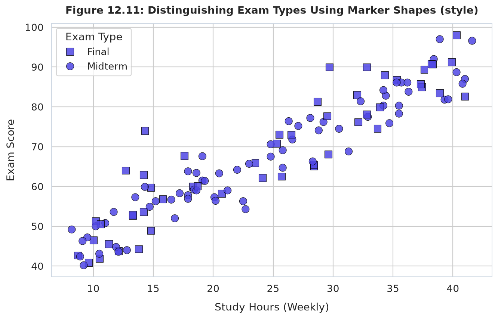
Video Ads, Search Ads, aur Social Media campaigns ko distinct shapes dekar visual clarity double ho jati hai:
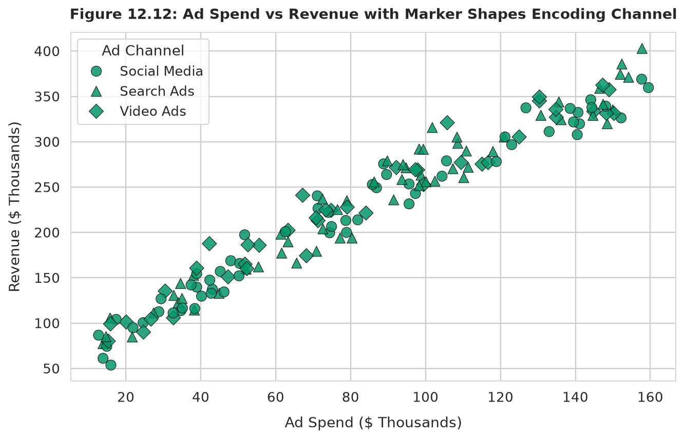
Data science me real insights tab nikalte hain jab hum ek sath multiple dimensions ko analyze karte hain. Seaborn hume allow karta hai ki hum ek single chart me 4 alag-alag variables ko simultaneously encode karein:
Study_HoursExam_ScoreStudy_Method (Self-Study, Coaching, Group Study)Attendance_Pct (55% to 99%)Exam_Type (Midterm Circle vs Final Square)import seaborn as sns
import matplotlib.pyplot as plt
import pandas as pd
df_students = pd.read_csv("student_study_performance.csv")
plt.figure(figsize=(10.5, 6.5))
sns.set_theme(style="whitegrid", font_scale=1.05)
# Simultaneous multi-dimensional encoding
sns.scatterplot(
data=df_students,
x="Study_Hours",
y="Exam_Score",
hue="Study_Method",
size="Attendance_Pct",
style="Exam_Type",
sizes=(40, 240),
palette="Set2",
alpha=0.85,
edgecolor="black",
linewidth=0.5
)
plt.title("Figure 12.13: Multivariate Scatter Plot Encoding 4 Dimensions Simultaneously", fontweight="bold", pad=14)
plt.xlabel("Weekly Study Hours (Hours)", labelpad=10)
plt.ylabel("Exam Score (0 - 100)", labelpad=10)
plt.legend(frameon=True, bbox_to_anchor=(1.02, 1), loc="upper left")
plt.tight_layout()
plt.show()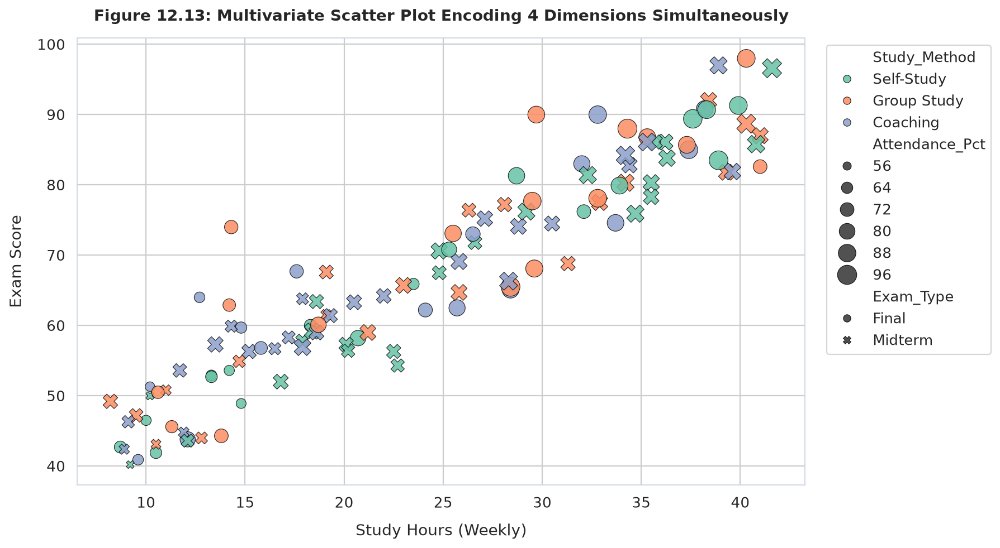
Data visualization me ek famous design principle hai: "Just because you can encode 5 variables, doesn't mean you should!" Niche di gayi side-by-side comparison ko dhyan se dekhiye:
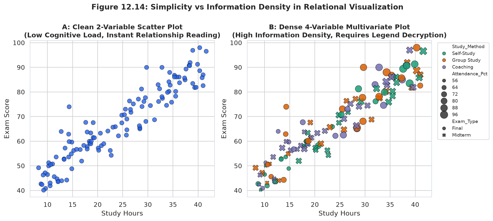
sns.relplot()Ab tak humne jo bhi scatter plot banaye wo Axes-Level function sns.scatterplot() se bane the. Lekin jab dataset me 4-5 categories hon aur unko ek hi plot me dikhane par visual clutter ban raha ho, to Seaborn hume deta hai Figure-Level function: sns.relplot()!
| Feature | Axes-Level: sns.scatterplot() |
Figure-Level: sns.relplot() |
|---|---|---|
| Target Canvas | Draws on a single pre-existing ax |
Creates and manages its own FacetGrid figure |
| Subplot Faceting | No direct support (requires manual matplotlib subplots) | Native automatic faceting via row, col, col_wrap |
| Figure Sizing | Controlled via plt.figure(figsize=(w, h)) |
Controlled via height=... and aspect=... |
| Multi-Kind Switch | Dedicated to scatter plots only | Can switch between kind="scatter" and kind="line" |
| Matplotlib Integration | Directly works with plt.subplot() |
Returns a FacetGrid object (g.fig, g.axes) |
relplot()import seaborn as sns
import matplotlib.pyplot as plt
import pandas as pd
df_marketing = pd.read_csv("marketing_campaign_sales.csv")
# Create figure-level faceted scatter plots by Region
g = sns.relplot(
data=df_marketing,
x="Ad_Spend_Thousands",
y="Revenue_Thousands",
hue="Channel",
col="Region",
col_wrap=2, # Wraps 4 regions into a neat 2x2 grid!
kind="scatter",
palette="tab10",
height=3.6,
aspect=1.3,
s=65,
alpha=0.85,
edgecolor="black",
linewidth=0.5
)
g.fig.subplots_adjust(top=0.90)
g.fig.suptitle("Figure 12.15: Regional Ad Spend vs Revenue Faceted by Region (sns.relplot)", fontweight="bold")
g.set_axis_labels("Ad Spend ($ Thousands)", "Revenue ($ Thousands)")
plt.show()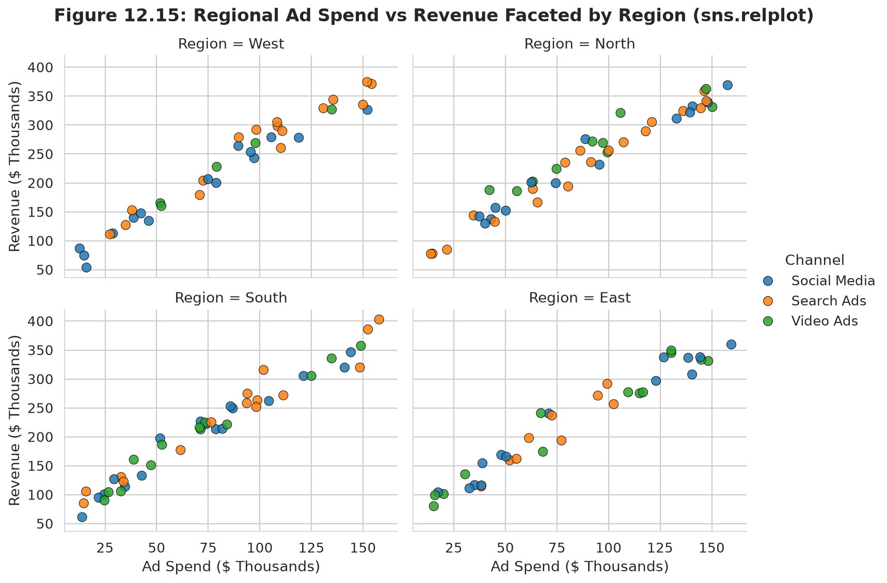
row, col, and col_wrapFaceting (also known as Small Multiples) data science me Edward Tufte ka ek famous principle hai: "Instead of stacking 10 colors in one crowded chart, divide the canvas into small, clean, synchronized panels."
Students ki performance ko col="Semester" ke sath 3 horizontal panels me divide karke dekhne se semester-over-semester consistency confirm hoti hai:
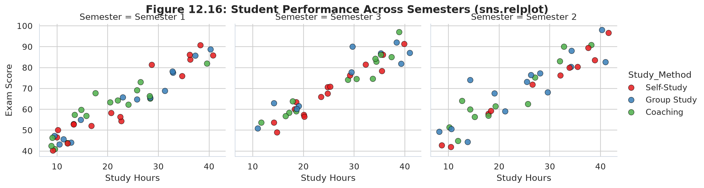
E-commerce me 200 products across 4 categories (Electronics, Apparel, Home & Kitchen, Fitness) ko col_wrap=2 karke render karne se pricing clusters reveal hote hain:
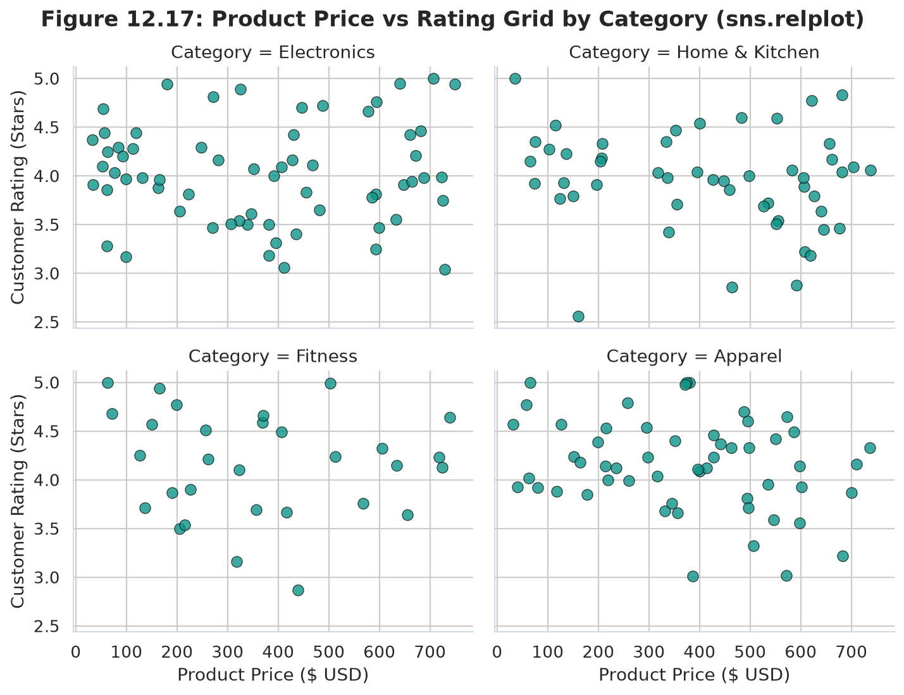
sns.regplot()Scatter plot me dots raw data points dikhate hain, lekin audience aksar puchti hai: "In points ka central direction kya hai? Ek average student ko kitne marks expect karne chahiye?"
Is mathematical trendline ko draw karne ke liye Seaborn ka dedicated function hai: sns.regplot()!
sns.regplot() Compute?1. Ordinary Least Squares (OLS) Line: Data points ke distance ko mathematically minimize karke best-fit straight line (y = mx + c) draw karta hai.
2. 95% Bootstrap Confidence Interval Band: Line ke charo taraf jo translucent shaded band dikhta hai, wo ye batata hai ki true statistical population regression line kis range me 95% certainty ke sath fall karti hai.
3. Polynomial Order: Agar data curve me hai, to order=2 pass karke parabolic trendline draw ki ja sakti hai!
import seaborn as sns
import matplotlib.pyplot as plt
import pandas as pd
df_students = pd.read_csv("student_study_performance.csv")
df_marketing = pd.read_csv("marketing_campaign_sales.csv")
fig, axes = plt.subplots(1, 2, figsize=(13, 5.5))
sns.set_theme(style="whitegrid", font_scale=1.05)
# Panel 1: Standard Linear Fit
sns.regplot(
data=df_students,
x="Study_Hours",
y="Exam_Score",
ax=axes[0],
color="#2563EB",
scatter_kws=dict(alpha=0.6, s=50, edgecolors="black"),
line_kws=dict(color="#DC2626", linewidth=2.2)
)
axes[0].set_title("A: Linear Regression Fit (Study Hours vs Marks)", fontweight="bold")
axes[0].set_xlabel("Weekly Study Hours")
axes[0].set_ylabel("Exam Score")
# Panel 2: Polynomial (Order=2) Fit for Diminishing Returns
sns.regplot(
data=df_marketing,
x="Ad_Spend_Thousands",
y="Revenue_Thousands",
order=2, # Fits a 2nd-degree parabola!
ax=axes[1],
color="#059669",
scatter_kws=dict(alpha=0.6, s=50, edgecolors="black"),
line_kws=dict(color="#D97706", linewidth=2.2)
)
axes[1].set_title("B: Polynomial (Order=2) Fit on Diminishing Returns", fontweight="bold")
axes[1].set_xlabel("Ad Spend ($ Thousands)")
axes[1].set_ylabel("Revenue ($ Thousands)")
plt.suptitle("Figure 12.18: Overlaying Fitted Trendlines with sns.regplot()", fontsize=14, fontweight="bold", y=0.99)
plt.tight_layout()
plt.show()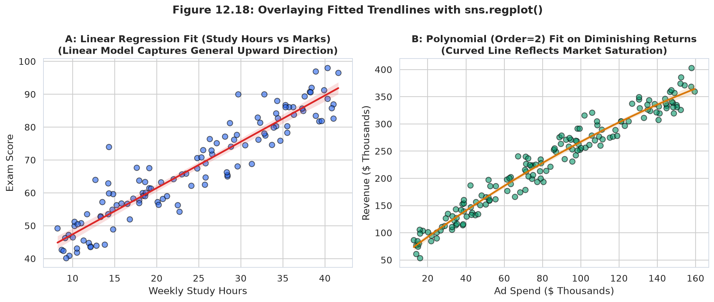
order=2 polynomial regression to capture diminishing returns where heavy marketing investment begins to plateau.Statistics me Pearson Correlation Coefficient (r) do continuous variables ke beech ki linear association ko measure karta hai. Iski value hamesha -1.0 se +1.0 ke beech hoti hai:
| Pearson r Range | Statistical Interpretation | Observed Shape in Scatter Plot |
|---|---|---|
| +0.80 to +1.00 | Very Strong Positive Linear Relationship | Tightly packed upward diagonal line. |
| +0.40 to +0.79 | Moderate Positive Linear Relationship | Upward trending dispersed cloud. |
| -0.39 to +0.39 | Weak or Absent Linear Relationship | Circular/amorphous cloud with no clear tilt. |
| -0.40 to -0.79 | Moderate Negative Linear Relationship | Downward trending dispersed cloud. |
| -0.80 to -1.00 | Very Strong Negative Linear Relationship | Tightly packed downward diagonal line. |
Pearson r extreme outliers ke samne bohot zyada sensitive hota hai. Ek single high-leverage erroneous observation correlation score ko drastically distort kar sakti hai:
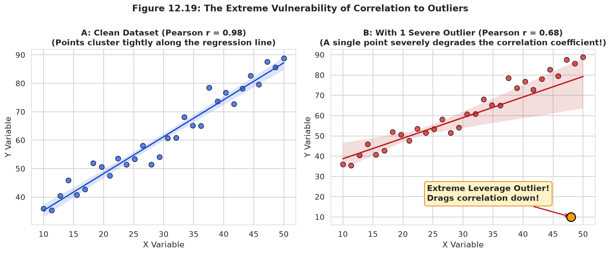
Pearson r sirf aur sirf linear (straight line) relationships ko detect kar sakta hai! Agar relationship curved ho (jaise U-shape y = x²), to Pearson r zero ke kareeb aa jata hai:
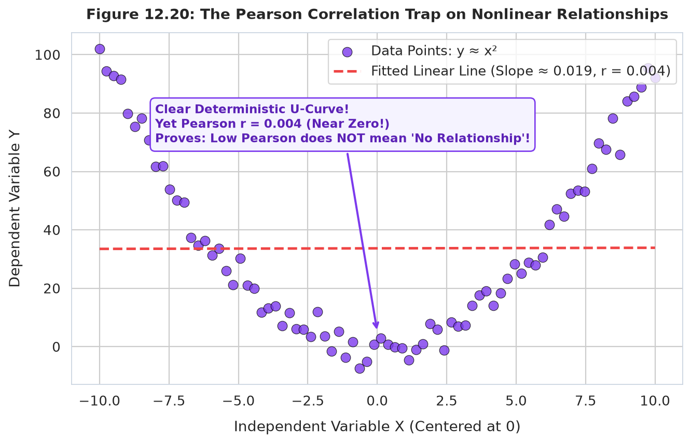
Higher education institutions me academic directors aur student counselors ye samajhna chahte hain ki continuous weekly study time aur class attendance student ke final grades ko kis hadd tak predict kar sakte hain.
| Variable | Metric Type | Mean ± Std | Observed Range [Min, Max] | Correlation with Exam Score (r) |
|---|---|---|---|---|
| Study Hours (Weekly) | Continuous Predictor | 24.22 hrs | [8.2, 41.6] hrs | +0.937 (Very Strong Positive) |
| Attendance % | Continuous Metric | 76.8% | [55%, 99%] | +0.805 (Strong Positive) |
| Exam Score | Target Outcome | 67.43 marks | [40.2, 98.0] marks | 1.000 (Self) |
| Preparation Method | Student Count (N) | Average Weekly Hours | Average Exam Score | Key Academic Finding |
|---|---|---|---|---|
| Group Study | 37 | 25.22 hrs | 69.42 marks | Highest mean score; peer discussions enhance conceptual clarity. |
| Self-Study | 42 | 24.87 hrs | 67.08 marks | Consistent performance across self-disciplined students. |
| Coaching / Tuition | 41 | 22.66 hrs | 66.0 marks | Slightly lower baseline hours; benefits dependent on individual homework. |
Scatter plot aur regression analysis prove karte hain ki 30+ weekly study hours maintain karne wale students me se 95% ne 75+ marks score kiye. College management remedial mentorship program design kar sakti hai specifically un students ke liye jinke study hours < 15 hrs hain.
Digital retail businesses har quarter me multi-million dollar ad campaigns execute karte hain across Facebook, Google Search, aur YouTube Video. Chief Marketing Officers (CMOs) ko ye decide karna hota hai ki ad budget kis region aur channel me allocate kiya jaye.
| Sales Region | Campaign Count | Average Ad Spend | Average Revenue Generated | Return on Ad Spend (ROAS) |
|---|---|---|---|---|
| North | 43 | $84.2k | $236.61k | 2.81x (Top performing territory) |
| West | 36 | $83.5k | $227.78k | 2.73x (High tech adoption, strong ROI) |
| East | 36 | $81.9k | $223.8k | 2.73x (Stable organic conversion) |
| South | 45 | $80.5k | $215.57k | 2.68x (Competitive market, higher CAC) |
Scatter plot me quadratic curve clearly dikhati hai ki ad spend $120k cross karne ke baad revenue curve flatten hone lagti hai. Agar marketing team blind hokar ad spend $200k tak badha degi, to customer acquisition cost (CAC) profitability ko erode kar degi!
Bohot se retail managers ka ye assumption hota hai: "Agar product premium aur mehenga hai, to customer ratings automatically high hongi." Aaiye hamare 200 products ke verified e-commerce dataset par is hypothesis ko test karte hain:
import seaborn as sns
import matplotlib.pyplot as plt
import pandas as pd
df_products = pd.read_csv("ecommerce_product_ratings.csv")
plt.figure(figsize=(10, 6))
sns.set_theme(style="whitegrid", font_scale=1.05)
sns.scatterplot(
data=df_products,
x="Price_USD",
y="Rating_Stars",
hue="Category",
palette="Dark2",
s=70,
alpha=0.8,
edgecolor="black",
linewidth=0.5
)
plt.axhline(4.0, color="#64748B", linestyle=":", linewidth=1.5, label="Average CSAT Benchmark (4.0 Stars)")
plt.title("Figure 12.21: Retail Case Study — Product Price vs Customer Satisfaction Rating", fontweight="bold", pad=14)
plt.xlabel("Product Retail Price ($ USD)", labelpad=10)
plt.ylabel("Customer Review Rating (1 - 5 Stars)", labelpad=10)
plt.legend(title="Merchandise Category", frameon=True, bbox_to_anchor=(1.02, 1), loc="upper left")
plt.tight_layout()
plt.show()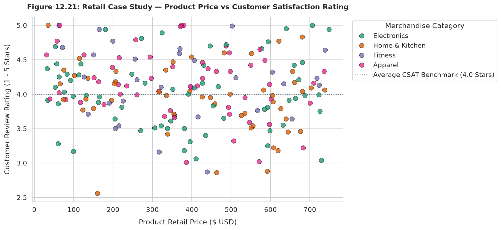
Cloud infrastructure aur DevOps engineering me scatter plot microservices ki saturation capacity ko diagnose karne ke liye gold standard visualization hai. Request volume (Requests Per Second — RPS) aur Response Latency (Milliseconds) ke beech ka relationship linear nahi hota!
import seaborn as sns
import matplotlib.pyplot as plt
import pandas as pd
df_telemetry = pd.read_csv("api_load_latency_telemetry.csv")
plt.figure(figsize=(10, 6))
sns.set_theme(style="whitegrid", font_scale=1.05)
sns.scatterplot(
data=df_telemetry,
x="Requests_Per_Sec",
y="Latency_ms",
hue="Service",
palette={"Authentication": "#3B82F6", "Product Search": "#10B981", "Checkout Service": "#F59E0B"},
s=70,
alpha=0.85,
edgecolor="black",
linewidth=0.5
)
# SRE thresholds
plt.axvline(1600, color="#DC2626", linestyle="--", linewidth=1.8, label="Saturation Knee Point (1,600 RPS)")
plt.axhline(200, color="#991B1B", linestyle=":", linewidth=1.5, label="200ms Critical SLA Limit")
plt.title("Figure 12.22: Cloud Microservice Telemetry — Load (RPS) vs Latency (ms)", fontweight="bold", pad=14)
plt.xlabel("Throughput Demand (Requests Per Second)", labelpad=10)
plt.ylabel("Service Response Latency (Milliseconds)", labelpad=10)
plt.legend(loc="upper left", frameon=True)
plt.tight_layout()
plt.show()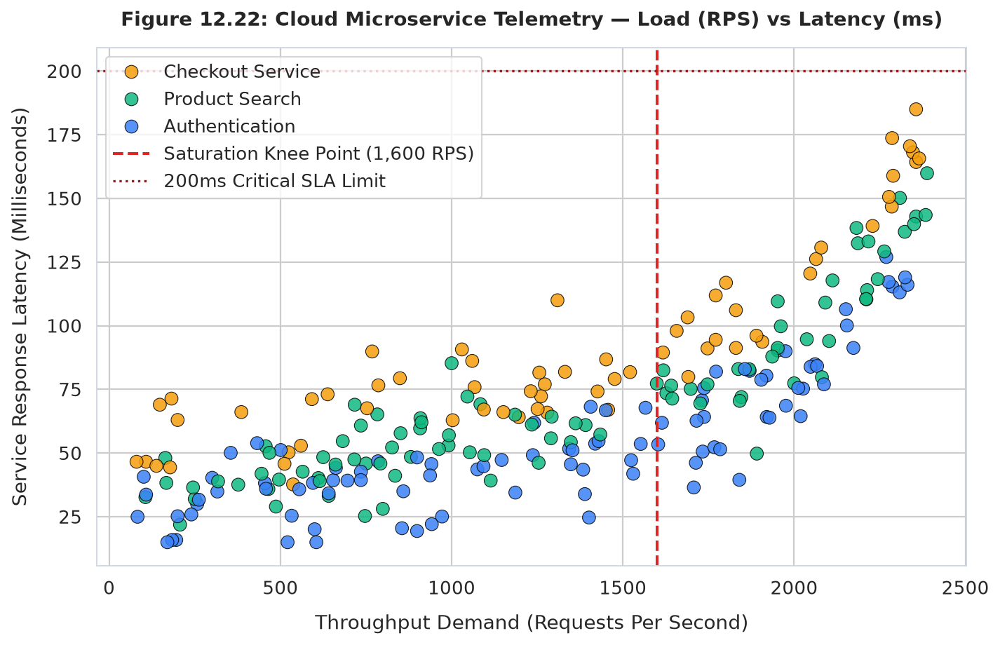
Telemetry proves that the cluster needs Horizontal Pod Autoscaling (HPA) triggered at 1,400 RPS — well before the 1,600 RPS knee point — to prevent latency explosions and cascading database connection timeouts during flash sales.
Scatter plots banate waqt beginners aur junior analysts aksar ye 14 critical mistakes karte hain. Aaiye inke root causes aur concrete debugging strategies samajhte hain:
| # | Common Pitfall / Anti-Pattern | Underlying Root Cause | Correct Professional Solution |
|---|---|---|---|
| 1 | Swapping X and Y Variables | Target/outcome variable ko X-axis par rakh dena | Independent predictor ko X par aur dependent response ko Y par rakhein |
| 2 | Treating Correlation as Causation | Assume karna ki X ne Y ko direct cause kiya | Always acknowledge confounding variables and experimental limits |
| 3 | Assuming All Relations are Linear | Forcing straight line on U-curves or saturation curves | Use order=2 polynomial fits or inspect raw scatter dots |
| 4 | Ignoring Silent NaN Dropping | Seaborn drops rows with missing values without alert | Always check df.isna().sum() before plotting |
| 5 | Ignoring Units on Axes | Generic labels like "Spend" instead of "$ Thousands" | Always append physical units in parentheses: (Hours), ($ USD) |
| 6 | Visual Encoding Overkill | Using 5 different colors, 4 sizes, and 5 shapes in one plot | Limit to max 3 dimensions per plot; use faceting (relplot) for more |
| 7 | Legend Blocking Data Points | Default legend rendering right on top of dense clusters | Use bbox_to_anchor=(1.02, 1) to place legend outside canvas |
| 8 | Extreme Marker Size Ratios | Default sizes making small dots disappear |
Explicitly set comfortable bounds: sizes=(40, 240) |
| 9 | Blindly Deleting Outliers | Assuming every outlier is a data collection error | Investigate domain context; outliers often represent critical fraud or spikes |
| 10 | Misinterpreting Outliers as Data Flaws | Deleting $4,500 laptops because median is $600 | Keep genuine luxury products; use robust statistics (median/IQR) |
| 11 | Unsynced Subplot Scales in Faceting | Comparing panels with independent free axes | Keep sharex=True, sharey=True for accurate visual comparison |
| 12 | Assuming Regression Line Proves Causality | Using OLS trendline to claim A causes B | Explain that regression measures conditional expectation, not mechanism |
| 13 | Passing ax=ax to sns.relplot() |
Figure-level function does not accept axes argument | Use sns.scatterplot(..., ax=ax) for single axes placement |
| 14 | Categorical Numeric Column Read as String | Numbers sorted alphabetically ("10", "100", "2") | Convert with pd.to_numeric() before plotting continuous axes |
ax to Figure-Level sns.relplot()# BUGGY: relplot is a Figure-Level function; it does NOT accept ax parameter!
fig, ax = plt.subplots(figsize=(8, 5))
sns.relplot(data=df, x="Hours", y="Score", ax=ax)
# Result: UserWarning or unexpected figure created outside ax!# CORRECTED OPTION A: If you need axes-level placement, use sns.scatterplot()
fig, ax = plt.subplots(figsize=(8, 5))
sns.scatterplot(data=df, x="Hours", y="Score", ax=ax)
# CORRECTED OPTION B: If you need figure-level faceting, use height & aspect directly
g = sns.relplot(data=df, x="Hours", y="Score", col="Subject", height=4.5, aspect=1.2)# BUGGY: Multi-variable legend drawn inside axes covers points in upper right
sns.scatterplot(data=df, x="Hours", y="Score", hue="Method", size="Attendance")
# Result: 20 data points hidden behind the opaque legend box!# CORRECTED: Position legend safely outside the plot canvas
ax = sns.scatterplot(data=df, x="Hours", y="Score", hue="Method", size="Attendance")
plt.legend(bbox_to_anchor=(1.02, 1), loc="upper left", frameon=True)
plt.tight_layout()Production data science me right tool choose karne ke liye quick reference guide:
| Functional Capability | sns.scatterplot() |
sns.relplot(kind='scatter') |
sns.regplot() |
|---|---|---|---|
| Architecture Level | Axes-level | Figure-level (FacetGrid) | Axes-level |
| Primary Purpose | Single-axes scatter plot | Multi-panel faceted grids | Linear/Polynomial trendline |
| Subplot Faceting (row/col) | Manual Matplotlib subplots | Built-in (row, col, col_wrap) |
Manual Matplotlib subplots |
| Trendline & CI Band | No built-in line | No built-in line | Automatic OLS line + 95% CI |
| Semantic Encodings | hue, size, style |
hue, size, style |
No hue/style mapping |
| Sizing Control | plt.figure(figsize=(w,h)) |
height=..., aspect=... |
plt.figure(figsize=(w,h)) |
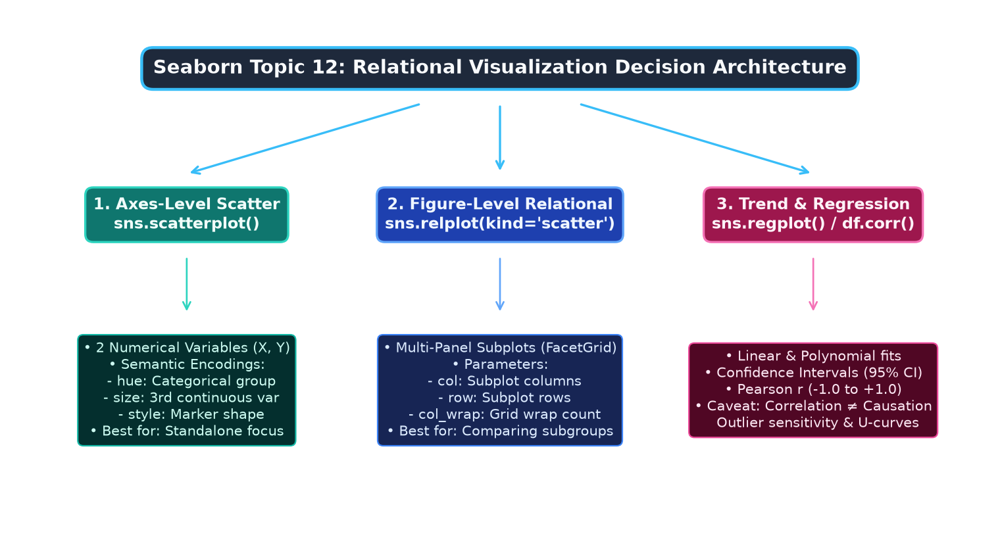
Test your conceptual understanding and hands-on coding mastery of scatter plots, relational visualizations, and regression models:
Scatter plot primary roop se kin do variables ke beech relationship explore karne ke liye design kiya gaya hai?
A) Do categorical variables ke beech frequency counts.
B) Do continuous numerical variables ke beech correlation aur distribution patterns.
C) Single time-series variable ka seasonal decompose.
D) Text data ke sentiment scores.
Correct Answer: B
Explanation: Scatter plot continuous bivariate numerical data (X and Y) ko 2D Cartesian plane par plot karta hai taaki linear, nonlinear, ya clustered relationships ko visually observe kiya ja sake.
Scatter plot canvas par ek single dot kya represent karta hai?
A) Pure dataset ka mathematical average.
B) Ek single row/observation ka (x, y) coordinate pair.
C) Category ka standard deviation.
D) Normal distribution curve ka peak.
Correct Answer: B
Explanation: Har dot dataset ki ek specific observation hoti hai — jaise ek student jiske study hours x-coordinate par hain aur exam score y-coordinate par hai.
Pearson Correlation Coefficient (r) ki valid mathematical range kya hoti hai?
A) 0 se ∞
B) 0 se 1.0
C) -1.0 se +1.0
D) -100 se +100
Correct Answer: C
Explanation: Pearson r strictly -1.0 (perfect negative linear relationship) se +1.0 (perfect positive linear relationship) ke beech scale hota hai. 0 ka matlab no linear association hota hai.
Agar aapko ek hi call me multiple subplots across categories (facets) banane hon, to kaunsa function best suited hai?
A) sns.scatterplot()
B) sns.relplot(kind="scatter")
C) sns.regplot()
D) plt.plot()
Correct Answer: B
Explanation: sns.relplot() ek figure-level function hai jo internally FacetGrid manage karta hai aur col, row, aur col_wrap parameters ke sath effortlessly multi-panel subplots generate karta hai.
Seaborn me continuous variable ko marker size par map karte waqt visual perception kis basis par hoti hai?
A) Marker ke perimeter ke basis par.
B) Marker ke 2D area (π r²) ke proportional scaling ke basis par.
C) Marker ke color opacity ke basis par.
D) Random pixel allocation ke basis par.
Correct Answer: B
Explanation: Human eye 2D objects ke area ko perceive karti hai. Agar diameter double kiya jaye to visual volume 4x ho jata hai. Seaborn area-proportional scaling apply karke accurate visual perception maintain karta hai.
sns.regplot() me fitted regression line ke charo taraf translucent shaded band kya represent karta hai?
A) Data points ka standard error bar.
B) Outlier detection boundary.
C) Bootstrap-calculated 95% Confidence Interval band for the mean regression estimate.
D) Sensor noise limit.
Correct Answer: C
Explanation: Seaborn by default 1,000 bootstrap iterations run karke regression line ka 95% confidence interval calculate karta hai, jo estimate ki statistical reliability show karta hai.
Agar data perfectly parabolic relationship follow karta hai (y = x² jahan x zero ke around centered hai), to Pearson correlation coefficient (r) kya hoga?
A) Exactly 1.0
B) Lagbhag 0.0 (near zero)
C) Exactly -1.0
D) Undefined
Correct Answer: B
Explanation: Pearson r sirf linear patterns measure karta hai. Parabola me left side negative slope aur right side positive slope aapas me cancel ho jate hain, jisse r ≈ 0 ho jata hai chahe relationship 100% deterministic ho!
sns.relplot() me subplot panels ka size control karne ke liye kaunse parameters use hote hain?
A) plt.figure(figsize=(10, 6))
B) height aur aspect
C) scale_x aur scale_y
D) panel_size
Correct Answer: B
Explanation: relplot() ek figure-level function hai jo external figsize ko override karta hai. Har individual panel ka height (inches) height=... se aur width height * aspect se define hoti hai.
Clean linear dataset me ek single extreme outlier add karne se correlation score par kya impact padta hai?
A) Score hamesha exactly 1.0 ban jata hai.
B) Score completely unchange rehta hai.
C) Outlier ke leverage ke hisab se Pearson correlation drastically decrease ya artificially increase ho sakta hai.
D) Seaborn error throw karta hai.
Correct Answer: C
Explanation: Pearson formula mean differences ke product par based hai, isliye extreme leverage points correlation score ko severe distort kar dete hain.
Ice-cream sales aur Shark attacks ke beech strong positive correlation (r = 0.85) dekhi gayi. Iska kya scientific conclusion hai?
A) Ice-cream khane se shark attack cause hota hai.
B) Dono variables garmiyon ke season (Temperature) namak ek confounding variable se positively linked hain; koi causal relation nahi hai.
C) Sharks ice-cream pasand karti hain.
D) Data false hai.
Correct Answer: B
Explanation: Ye classical spurious correlation hai. Garmiyon me zyada log ice-cream khate hain aur zyada log beach par swimming karne jate hain (leading to shark attacks). Common cause (Summer heat) dono ko drive kar raha hai.
Figure 12.3 me smartphone price aur battery capacity ke beech negative correlation (r = -0.728) dekha gaya. Ek non-technical person isko dekh kar bol sakta hai: "Mehenga phone khareedne se battery kharab milti hai!" Is graphical trend ka sahi domain engineering explanation kya hai?
Expert Interpretation: Budget phones ($150 - $350) utilitarian hote hain — thick chassis, heavier plastic body jo 5,500 - 6,000 mAh battery pack karne ki physical space deti hai. Flagship phones ($900 - $1,300) ultra-slim design, aerospace glass/titanium, multiple periscope camera lenses, aur wireless charging coils pack karte hain, jisse battery compartment ke liye physical space kam bachti hai (4,000 - 4,500 mAh). Graph consumer compromise aur physical industrial engineering constraints ko reflect karta hai — product defect ko nahi.
Figure 12.5 me ad spend $120k cross karne ke baad revenue curve kaisa behavior display karti hai? CMO ko budget doubling plan par kya advise denge?
Expert Interpretation: Curve diminishing returns (concave down) show karti hai. Initial $40k spend par revenue $80k se $180k (+$100k) jump karta hai, lekin $120k se $160k (+40k) spend karne par revenue sirf $330k se $360k (+$30k) grow hota hai. CMO ko advise deni chahiye ki ad spend $130k par cap karein aur bacha hua budget conversion optimization ya customer retention me lagayein.
Figure 12.18 me Panel B me linear fit ki jagah order=2 polynomial fit kyun use kiya gaya? Linear fit karne se kya analytical error ho sakta tha?
Expert Interpretation: Linear model assume karta hai ki har extra $1 spend hamesha constant revenue create karega. Agar hum straight line fit karte, to wo high ad spend ($160k+) par revenue ko artificially over-predict karti aur low spend par under-predict karti. order=2 quadratic model saturation curve ko mathematically follow karta hai aur residuals ko minimize karta hai.
Figure 12.21 me 200 products ka retail price aur customer satisfaction rating plot kiya gaya hai. Correlation near-zero (r = -0.124) aayi. Kya iska matlab hai ki retail store ko premium products bechna band kar dena chahiye?
Expert Interpretation: Bilkul nahi! Premium products ka primary purpose high gross profit margin aur brand prestige hota hai, na ki highest numerical review count. Graph prove karta hai ki customer rating product ke price se nahi, balki value-for-money expectation match se drive hoti hai. Store ko premium products continue rakhne chahiye lekin marketing me unke features ko accurately set karna chahiye taaki unrealistic customer expectations build na hon.
Figure 12.22 me 1,600 RPS par vertical dashed red line mark ki gayi hai. SRE engineer is scatter plot ko dekh kar cloud autoscaling threshold kahan set karega aur kyun?
Expert Interpretation: 1,600 RPS se pehle latency flat (< 80ms) rehti hai. Lekin 1,600 RPS ke baad server CPU queues saturate ho jati hain aur latency hockey-stick curve me explode hokar 400ms+ ho jati hai. Kubernetes HPA autoscaling trigger threshold ko 1,350 – 1,400 RPS par set karna chahiye taaki naye pods spawn hokar ready ho jayein before traffic reaches the destructive 1,600 RPS knee point!
Task: Ek reproducible DataFrame create kijiye jisme 3 manufacturing factories ("Factory A", "Factory B", "Factory C") ke production machines ka Operating_Hours aur Defect_Count recorded ho. sns.relplot() use karke teeno factories ke liye alag-alag subplots (columns) banaiye, jisme machine operator type hue="Shift" (Day vs Night) ke roop me encoded ho.
import seaborn as sns
import matplotlib.pyplot as plt
import pandas as pd
import numpy as np
np.random.seed(42)
records = []
for fac in ["Factory A", "Factory B", "Factory C"]:
for shift in ["Day", "Night"]:
n = 30
hours = np.random.uniform(50, 400, n)
base_defect = 2 if shift == "Day" else 5
defects = np.clip(base_defect + (hours * 0.04) + np.random.normal(0, 2, n), 0, 30)
for h, d in zip(hours, defects):
records.append({"Factory": fac, "Shift": shift, "Hours": round(h, 1), "Defects": round(d, 1)})
df_factory = pd.DataFrame(records)
g = sns.relplot(
data=df_factory,
x="Hours",
y="Defects",
hue="Shift",
col="Factory",
kind="scatter",
palette={"Day": "#2563EB", "Night": "#DC2626"},
s=65,
alpha=0.8,
edgecolor="black",
linewidth=0.5,
height=4,
aspect=1.1
)
g.fig.subplots_adjust(top=0.85)
g.fig.suptitle("Machine Operating Hours vs Defect Count across Factories", fontweight="bold")
plt.show()Task: Ek car dealership dataset banaiye jisme Engine_Size_Liters, Fuel_Economy_MPG, Vehicle_Class (Sedan, SUV, Truck), aur Horsepower hon. sns.scatterplot() use karke Engine Size vs MPG plot kijiye, Vehicle Class ko hue banaiye, aur Horsepower ko bubble size banaiye using safe bounded limits sizes=(40, 250).
import seaborn as sns
import matplotlib.pyplot as plt
import pandas as pd
import numpy as np
np.random.seed(101)
n = 100
engine = np.random.uniform(1.2, 5.0, n)
mpg = np.clip(45 - 5.5 * engine + np.random.normal(0, 3, n), 12, 50)
hp = np.clip(80 + 55 * engine + np.random.normal(0, 20, n), 90, 450).astype(int)
classes = np.random.choice(["Sedan", "SUV", "Truck"], size=n, p=[0.45, 0.35, 0.20])
df_cars = pd.DataFrame({"Engine_Size": np.round(engine, 1), "MPG": np.round(mpg, 1), "Horsepower": hp, "Class": classes})
plt.figure(figsize=(9.5, 6))
sns.set_theme(style="whitegrid")
sns.scatterplot(
data=df_cars,
x="Engine_Size",
y="MPG",
hue="Class",
size="Horsepower",
sizes=(40, 250),
palette="Dark2",
alpha=0.8,
edgecolor="black",
linewidth=0.5
)
plt.title("Vehicle Fuel Economy vs Engine Displacement with Horsepower Sizing", fontweight="bold")
plt.legend(bbox_to_anchor=(1.02, 1), loc="upper left", frameon=True)
plt.tight_layout()
plt.show()Task: Ek non-linear dataset par sns.regplot() run kijiye jisme ek plot linear trendline (order=1) dikhaye aur dusra plot quadratic polynomial curve (order=2) dikhaye taaki reader model fit difference compare kar sake.
import seaborn as sns
import matplotlib.pyplot as plt
import numpy as np
np.random.seed(42)
x = np.linspace(5, 50, 60)
y = 100 - 0.08 * (x - 20)**2 + np.random.normal(0, 4, 60)
fig, axes = plt.subplots(1, 2, figsize=(12, 5))
sns.set_theme(style="whitegrid")
# Linear fit
sns.regplot(x=x, y=y, order=1, ax=axes[0], color="#2563EB",
scatter_kws=dict(s=50, edgecolors="black"), line_kws=dict(color="#DC2626", lw=2))
axes[0].set_title("Order=1: Linear Regression (Poor Fit on Curve)", fontweight="bold")
# Quadratic fit
sns.regplot(x=x, y=y, order=2, ax=axes[1], color="#059669",
scatter_kws=dict(s=50, edgecolors="black"), line_kws=dict(color="#D97706", lw=2))
axes[1].set_title("Order=2: Polynomial Fit (Accurately Tracks Curve)", fontweight="bold")
plt.tight_layout()
plt.show()Niche diye gaye code snippet ka output kya hoga? Matplotlib / Seaborn axes par continuous numeric scale draw hoga ya discrete ticks?
df_test = pd.DataFrame({"Price": ["10", "20", "100", "5"], "Rating": [4.1, 4.3, 4.8, 3.9]})
sns.scatterplot(data=df_test, x="Price", y="Rating")Predicted Output: X-axis par continuous number line nahi banegi! Ticks alphabetical categorical order me draw honge: ["10", "100", "20", "5"] (notice karein "100" "20" se pehle aa jayega!).
Explanation: Kyunki values quotes me strings hain (object dtype), Seaborn continuous axis create nahi kar sakta. Solution: df_test["Price"] = pd.to_numeric(df_test["Price"]).
Agar hum ek dataset jisme sirf 15 noisy points hon par sns.regplot(x=x, y=y, order=8) pass karein, to regression line kaisa behavior display karegi?
Predicted Output: Regression line extreme roller-coaster oscillations (wild wave curves) draw karegi jo har individual point ko touch karne ke chakkar me canvas boundaries se bahar nikal sakti hai!
Explanation: Isko statistical Overfitting (Runge's Phenomenon) kehte hain. High polynomial degree noise ko memorize kar leti hai aur model predictive validity lose kar deta hai. Practice me order=1 ya maximum order=2 hi use karna chahiye.
Business Scenario: Aap ek global subscription e-commerce platform me Lead Analytics Specialist hain. Executive committee Q4 Strategy Meeting me customer retention aur revenue concentration evaluate karna chahti hai. 300 customers ka telemetry dataset analyze kijiye jisme Customer_Tenure_Months, Total_Spend_USD, Loyalty_Score (1-100), Tier (Bronze, Silver, Gold), aur Churn_Status (Active vs Churned) recorded hai.
Deliverables:
sns.relplot() use karke tenure vs spend ko col="Tier" ke sath 3 synchronized subplots me divide kijiye.hue se differentiate kijiye.size par map kijiye using sizes=(35, 220).import seaborn as sns
import matplotlib.pyplot as plt
import pandas as pd
import numpy as np
# Step 1: Generate reproducible Customer CLV Dataset
np.random.seed(42)
n_cust = 300
tenure = np.random.uniform(2, 48, n_cust)
tiers = np.random.choice(["Bronze", "Silver", "Gold"], size=n_cust, p=[0.4, 0.35, 0.25])
spend_list = []
loyalty_list = []
churn_list = []
for t, tier in zip(tenure, tiers):
tier_mult = {"Bronze": 1.0, "Silver": 1.8, "Gold": 3.2}[tier]
base_spend = (t * 45 * tier_mult) + np.random.normal(0, 150)
spend = max(50.0, round(float(base_spend), 1))
spend_list.append(spend)
loyalty = np.clip(int(30 + t * 1.1 + np.random.normal(0, 10)), 5, 99)
loyalty_list.append(loyalty)
# Churn probability higher if tenure < 12 and loyalty < 40
churn_prob = 0.55 if (t < 12 and loyalty < 40) else (0.10 if tier == "Gold" else 0.22)
churn = "Churned" if np.random.random() < churn_prob else "Active"
churn_list.append(churn)
df_clv = pd.DataFrame({
"Tenure_Months": np.round(tenure, 1),
"Total_Spend_USD": spend_list,
"Loyalty_Score": loyalty_list,
"Tier": tiers,
"Status": churn_list
})
# Step 2: Multi-Panel Faceted Relational Visualization
g = sns.relplot(
data=df_clv,
x="Tenure_Months",
y="Total_Spend_USD",
hue="Status",
size="Loyalty_Score",
sizes=(35, 220),
col="Tier",
col_order=["Bronze", "Silver", "Gold"],
palette={"Active": "#059669", "Churned": "#DC2626"},
alpha=0.85,
edgecolor="black",
linewidth=0.5,
height=4.5,
aspect=1.05
)
g.fig.subplots_adjust(top=0.85)
g.fig.suptitle("Capstone Project: Customer Lifetime Value (CLV) & Churn Risk by Membership Tier", fontweight="bold")
g.set_axis_labels("Customer Account Tenure (Months)", "Total Cumulative Spend ($ USD)")
plt.show()
# Step 3: Verified Analytical Metrics
print("Customer CLV Audit Summary:")
print("Total Analyzed Accounts:", len(df_clv))
print("Overall Active / Churned:", df_clv["Status"].value_counts().to_dict())
print("Median Spend by Tier:
", df_clv.groupby("Tier")["Total_Spend_USD"].median())Capstone Executive Insight: Faceted visualization se prove hota hai ki Gold tier accounts me churn rate lowest (< 12%) hai jabki Bronze tier me initial 12 months ke andar churn spike karta hai. Loyalty score < 35 wale early accounts sabse high churn risk represent karte hain — retention marketing team ko onboarding phase me targeted engagement playbooks activate karne chahiye!
Agla topic hai Seaborn Topic 13: Line Plots & Time-Based Relationships! Wahan hum seekhenge ki ordered temporal data, continuous stock movements, trend tracking, aur multi-condition time-series aggregation ko sns.lineplot() ke through kaise visualize kiya jata hai!